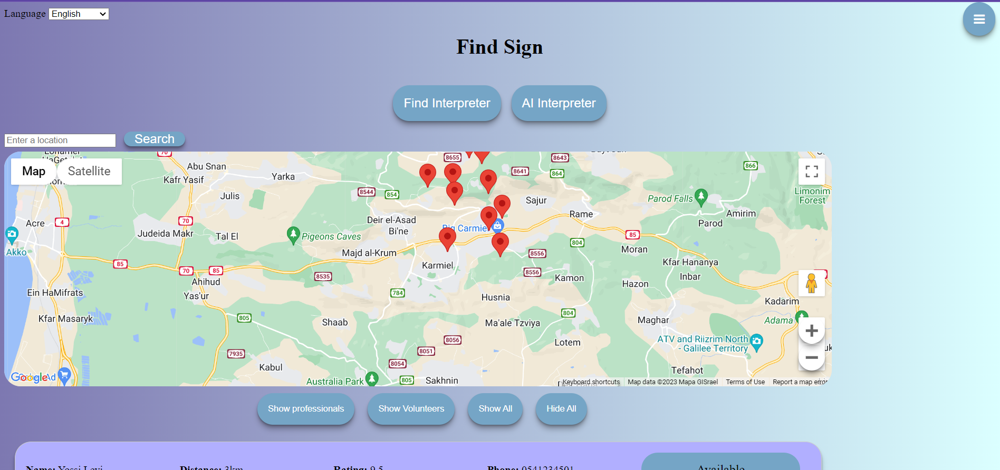
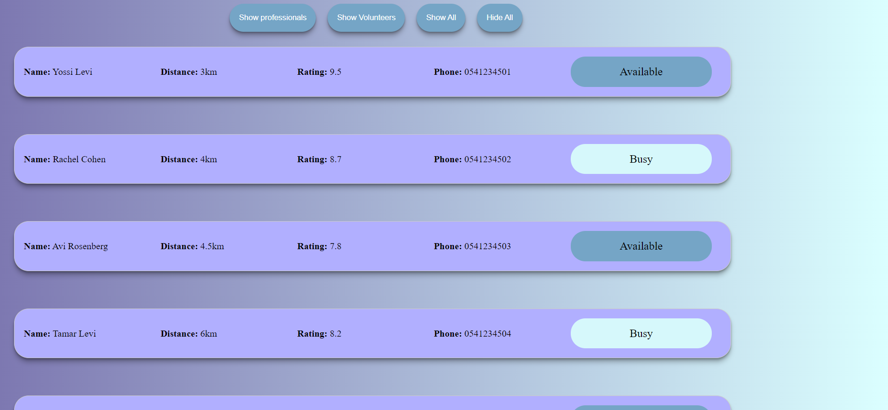
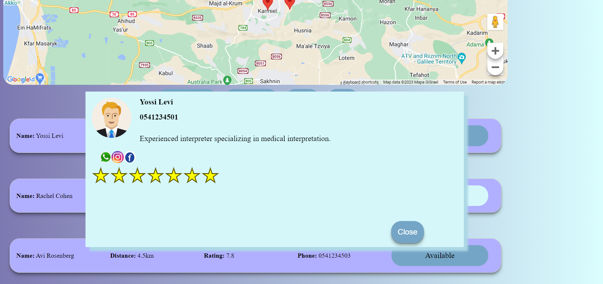
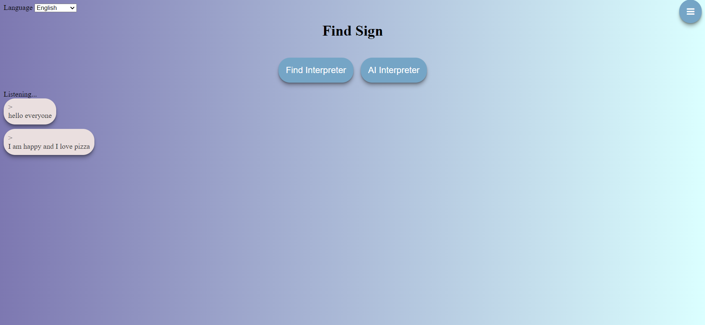
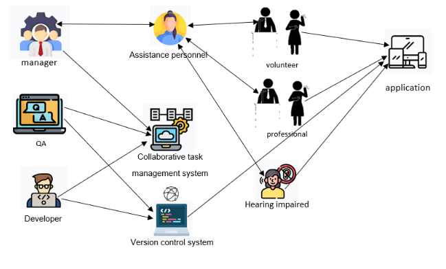

Sign Find
שבירת מחסום השפה לקהילת כו"ח
*כו"ח (כבדי שמיעה וחרישים)
תיאור הבעיה:
- קושי במציאת מתרגומן בזמן אמת .
- זמינות מוגבלת של מתרגמים מיומנים.
- השפעה על העצמאות ואיכות החיים של אוכלוסית כו"ח.
הפתרון שלנו: Sign Find
- מטרה: לתת מענה שמתגבר על מחסומי השפה העומדים בפני קהילת לקויי השמיעה.
- גישה מהירה וקלה למתורגמנים בסביבה.
- תמלול דיבור לטקסט בזמן אמת באמצעות AI (בינה מלאכותית).
אב טיפוס
לחצו כאן להצגה
צילומי מסך:

מפה עם מיקום של המתורגמנים

רשימה של מתורגמנים

כרטיס מתורגמן

תמלול
ה -MOV המרכזיים בפרויקט:
מספר פגישות מוצלחות:
היעד הוא 95% מהפגישות הן מוצלחות
MOV זה מתמקד בהערכת היעילות של האפליקציה. פגישה מוצלחת מרמזת שהתקשורת בין הצדדים המעורבים הייתה ברורה, מדויקת ועמדה ביעדים הרצויים. על ידי מעקב אחר מספר הפגישות שדורגו כמוצלחות על ידי המשתמשים.
מספר הורדות לחודש:
היעד הוא 3000 הורדות בחודש
MOV זה מודד את הפופולריות של האפליקציה. זה מציין את רמת העניין והביקוש לאפליקציה בתוך קהילת כו"ח. מעקב אחר מספר ההורדות בחודש עוזר להעריך את קצב הצמיחה של האפליקציה. מספרי הורדה גבוהים יותר מסמנים שהאפליקציה עונה על הצרכים של קהל היעד וזוכה להכרה ככלי רב ערך לטיפול במחסום השפה.
מודל ארכיטקטוני ראשוני:
Quality attributes:
Availability - תהיה זמינות מתואמת וקלה להשגה בפלטפורמות שונות עבור קהל כו"ח.
Accessibility - תכונות נגישות כמו תקשורת מבוססת טקסט ותקשורת ישירה ישימות בקלות באמצעות פלטפורמות שונות כמו ווצאפ.
Usability - המערכת פשוטה לשימוש, יעילה וקלה לניווט.
Reliability - המערכת מבצעת בדיקות תקופתיות, תיקון וזמני השבתה קטנים להבטחת אמינות.
בעלי עניין :
Distributed cognition:
לקויי שמיעה, מפתח תוכנה, מתורגמן מקצועי, מתורגמן מתנדב, בודק תוכנה, מנהל
Boundary spanners:
אנשי סיוע
Boundary objects:
מערכת ניהול משימות שיתופית:בכך ניתן לכל אחד מהצוותים: מפתחים, מנהלים ובודקי תוכנה, ליצור משימות, לספק הערות ולעקוב אחר ההתקדמות. מערכת ניהול גרסאות: הם יכולים לעקוב אחר שינויים בקוד, ליצור ולשלב גרסאות שונות ולנהל שיתוף פעולה בין מפתחים.(לדוגמה Git)
דיאגרמה המראה את בעלי העניין :

Flow :
ממשק משתמש ידידותי: בכך שהמערכת מאפשר חיפוש מתורגמן מתאים על ידי ביצוע סינון מתורגמנים לפי בחירת מיקום לא בהכרח המיקום שבו נמצא כרגע, זה ניתן לבחירה. הביצוע סינון נעשה בעזרת פרופילי המתורגמנים שהוגדרו במערכת (פרטים אודותיו: מיקום, שפה וניסיון).
יצירת קשר/תקשורת ישירה: עבור כל מתורגמן יש אפשרות להצגת תקשורת עם הלקוח, המערכת תקשר אוטומטית בין המתורגמן ללקוח בעת לחיצה על כפתור כמו למשל ווצאפ וכך נוצרת תקשורת ישירה.
מטרות ברורות: נקבע מטרות ברורות הן עבור אנשי לקויי שמיעה והן עבור מתורגמנים.
- -המטרה העיקרית של אנשי לקויי שמיעה היא למצוא מתורגמן מקצועי שיוכל לסייע להם בצרכי התקשורת שלהם. לאחר הפגישה על משתמש בעל לקות שמיעה לדרג את המתורגמן (בחירה לא חובה).
- -המטרה העיקרית של המתורגמנים הרשומים באפליקציה היא להציע שירותים איכותיים לבעלי לקויות שמיעה, הם צריכים ליצור גשרי תקשורת ברורים ומדויקים בין עולם לקויי השמיעה ובין האנשים הרגילים.
נאפשר דירוג מתורגמן: עבור כל מתורגמן מוצג הדירוג שיתבצע באמצעות הלקוח לאחר השימוש בשירות וכך יספק ביקורת על איכות השירות וחוויתו. זה עשוי לעזור למתורגמנים לשפר את איכות השירות שלהם ולמשתמשים לספק מידע למשתמשים עתידיים.
עקרונות SDT:
- Competence: נאפשר למשתמשים בעלי לקות שמיעה להרגיש מוכשרים ומיומנים בכך שנאפשר להם לדרג את המתורגמנים מ 1 עד 5 כוכבים. המתורגמנים המתנדבים והמקצועיים - אם דירוג איכות השירות יהיה גבוה, הם יחושו כך שיש להם פוטנציאל וכישרון ובמידה ואיכות השירות מדורג כפחות טוב, אנו מקווים שיראו בכך רצון להשתפר כי הם מסוגלים.
- Autonomy: נאפשר למשתמשים בעלי לקות שמיעה לקבל שליטה על התקשורת הישירה שלהם עם מתורגמנים באמצעות פלטפורמות שונות כמו ווצאפ. נאפשר להם ליזום שיחות, לבחור מתורגמנים מועדפים ולקבוע את תזמון הפגישה.
- Relatedness: משתמש שביצע שימוש בשירותיו של מתורגמן מסוים וחש כי איכות שירותו אכן טובה ומועדפת עליו, הוא יוכל לבצע תקשורת נוספת ולחזור לאותו מתורגמן בקלות. כך אנו מייצרים קשרי עבודה ארוכי טווח המבוססים על אמון בין משתמש (קהילת כו"ח) לבין מתורגמן.
מכניזמים של משחוק:
- תחרות: נעשה זאת באמצעות ניקוד ורמות, במערכת ניצור שתי טבלאות ניקוד, אחת עבור המשתמשים עם לקות שמיעה ואחת עבור המתורגמנים.
- תגמול: בסיום כל חודש, המערכת מעניקה פרס לשלושת המשתמשים עם המספר הגבוה ביותר של נקודות. כך אנו מעודדים תחרותיות, מוטיבציה והגברת מעורבות של המשתתפים.
שאלות?
תודה רבה!